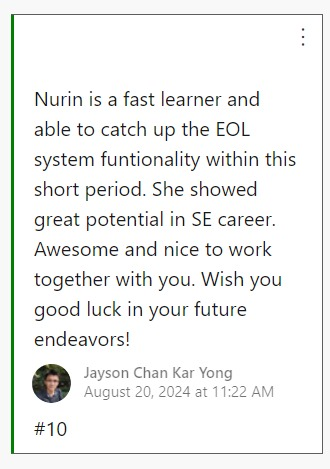
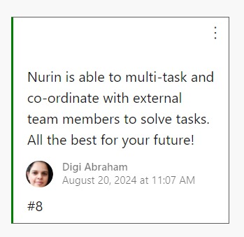

Work Experience

Company Name
Exact Asia Development Sdn Bhd
What did I do?
During my internship, one of my key responsibilities was migrating 16 projects from .NET Framework 4.7.2 to .NET Standard 2.0, which was no small task. Ensuring every project maintained its functionality and performance was a challenge I embraced, as I also converted 10 projects to fit Exact's new system design.
Along the way, I contributed to resolving a few customer-reported bugs, which not only improved the deliverables but also helped streamline our team's efficiency. Being part of a dynamic scrum team of seven members, I immersed myself in Agile ceremonies, using Azure DevOps to keep tasks on track and ensure continuous integration flowed smoothly.
One of the most rewarding aspects of my work was collaborating with our Product Owner from the Netherlands, where I learned the importance of clear communication and attention to detail to meet exacting user story requirements and deliver them on time.
Feedback
Here are some feedbacks on my performance from my teammates during my final Sprint Retrospective at Exact ADC.
Senior Software Engineer, Mei Pheng Lau

Software Engineer, Jayson Chan Kar Yong
Senior Quality Engineer, Digi Abraham
Note: EOL (Exact Online) is one of Exact's product